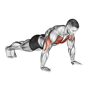

01. Push-ups

Ascend & descend with rigid spine
1. Push-ups (Compound Press)
Upper Body & Shoulders
Benefit for Developers:
Engages chest, anterior deltoids, and triceps while stabilizing the rotator cuff and shoulder joints weakened by hours of keyboard and mouse usage.
Form: Hands slightly below shoulder line, elbows tucked at ~45 degrees (not flared outward), torso completely straight like a plank.
If difficult at first: Perform knee push-ups or place your hands elevated on a bed, desk, or sofa to reduce the load.
Prescription:
3 sets × 8-12 reps